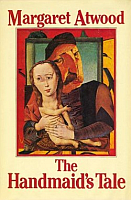
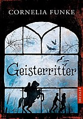

Winnie-the-Pooh by A.A. Milne
In the Milne books, Pooh is naive and slow witted, but he is also friendly, thoughtful and steadfast. Although he and his friends agree that he is "a bear of very little brain," Pooh is occasionally acknowledged to have a clever idea, usually driven by common sense.

You can find this book at Toronto Public Library
The Handmaid's Tale by Magaret Atwood
After a staged attack that killed the President of the United States and most most of Congress, a radical political group caleed the "Sons of Jacob" used quasi-Christian ideology to launch a revolution. The United States Constitution was suspended, newspapers were censored, and what was formaly the United States of America was changed into military dictatorship known as the Republic of Gilead.
You can find this book at Toronto Public Library
Ghost Knight by Cornelia Funke
Jon's desperate quest to find out why the ghosts are after him leads him to the mistery of a centuries-old murder. Meanwhile, he is still pursued by the vengeful ghosts, so with the help of a new friend, Ella, he summons a noble ghost - Sir William Longspee, the Ghost Knight of the title - to protect him. They finally uncover a complicated truth and right a grievous wrong.
You can find this book at Toronto Public Library